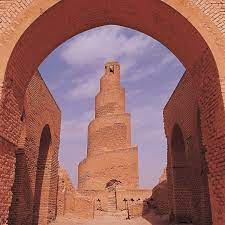

The Sumerian civilization
The Sumerian civilization was one of the earliest kno wn civilizations in human history, flourishing in Mesopotamia (modern-day so uthern Iraq) during the Bronze Age. Sumer was located in the southern part of Mesopo tamia, between the Tigris and Euphrates rivers, where the fertile land facilitated a gricult ure and the development of complex societies.

The Malwiya Minaret
The Malwiya Minaret is part of the Great Mosque of Samarra, also known as the Samarra Mosque. It was built in the year 848 CE during the reign of the Abbasid Caliph Al-Mutawakkil. The minaret is famous for its unique spiral de sign, which consists of a tall cylindrical tower wi th a spiraling external ramp wrapping around it.
Babylon Gate
The Ishtar Gate, also known as the Babylon Gate, was one of the mos t famous entrances to the city of Babylon. It was constructed during the reign of King Nebuchadnezzar II in the 6th century BCE. The Ishtar Gate was a massive, double-gated entryway adorned with colorful glazed bricks depicting various animals and symbols. It was part of a larger complex that includ ed a processional way leading to the city's main temple.